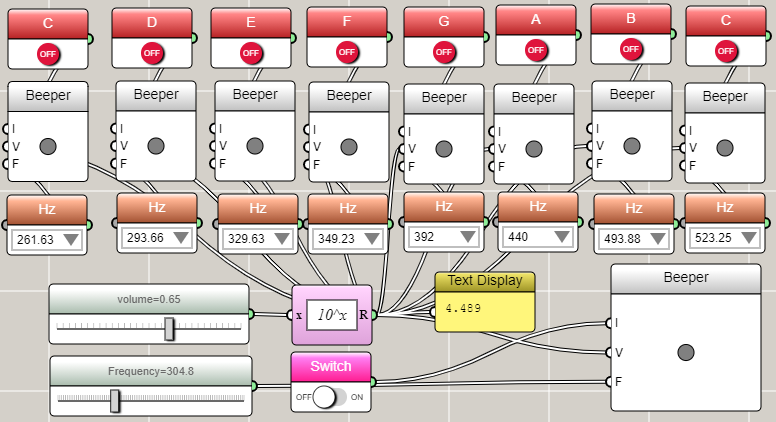
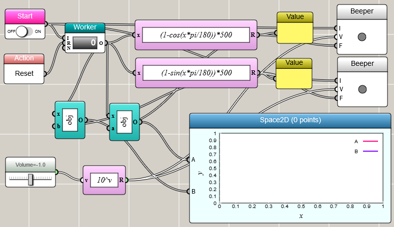

Data Sonification with iFlow
Turn data into notes with Beeper blocks, momentary switches, and signal synthesis — all wired visually.
The simplest sound block that can be used to sonify data is the Beeper. A Beeper block accepts a press signal to activate it and values to specify the frequency and volume. You can use momentary switches to simulate keys for playing certain notes, as shown in the following screenshot. The example also uses a slider to adjust the volume of all the beepers. It the uses an item selector for each beeper to control its frequency individually.

Any sound can be decomposed into a combination of sinusoidal waves with different frequencies. This is usually done through the Fourier analysis. You can use Univariate Function blocks, Worker blocks, and Beepers to synthesize your own sound. The following example shows the synthesis of an ambulance siren.
